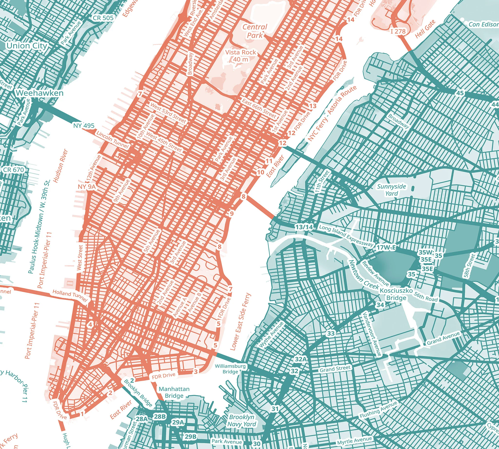

DS 4200: Information Presentation and Visualization | Spring 2024
Group 26: Kimi Nguyen, Nikita Seth, Max Saenz
“Just 20 years ago, New York City was racked with crime: murders, burglaries, drug deals, car thefts, thefts from cars” (Kelling, 2009). In the 1990s, New York City was one of the most dangerous cities in America. During that era, under then-mayor Rudolph Giuliani's administration, more laws were passed and enforced to put petty and notorious criminals behind bars. “Over the 1990s, misdemeanor arrests increased 70 percent in New York City… But this decline was not the result of more of those involved in misdemeanors being incapacitated from further crimes by being in prison: prison stays for misdemeanors are short and only 9.4 percent of misdemeanor arrests result in a jail sentence, the [co-authors Hope Corman and Naci Mocan] note. Furthermore, an increase in misdemeanor arrests has no impact on the number of murder, assault, and burglary cases, the authors found” (Francis, 2003). Recently, New York City has been seen in a more positive light, attracting more tourists than ever while consistently increasing safety for citizens. Some new initiatives have even gone so far as implementing robot cops (Mays, 2023).
New York City has tried to curb crime in multiple ways, often to racist and disproportionate ends. One notable case was the stop-and-frisk policy that was popular under the Bloomberg administration from 2002-2013. Stop-and-frisk was a policy where police could stop individuals they suspected of criminal activity, in order to curb low-level crimes. This system was difficult to control since all an officer needed to stop someone was “reasonable suspicion” which was self-defined. In practice, this system targeted people of color disproportionately, where "participants reported a history of stop-and-frisk experience in the prior year, with higher levels among Black (47%) and Hispanic/Latinx (45%) than White (38%) participants" (Khan et al., 2021). New York City harmed many minority communities it was meant to protect and did a poor job at curbing crime.
Some may argue that New York City did what was necessary to reduce crime rates, while others may state that implementations were put in place at the cost of minorities’ futures and communities. By taking a look at today’s crime rates and by looking through the eyes of data, we may be able to get a clearer picture of who paid the price for these harsh laws and enforcement and if these punishments are still targeting the same communities.
Our mission is to understand if communities that were targeted in the past under various administrations are still being targeted more recently in 2023. In addition, we aim to investigate the repercussions and effects of such targeting on the affected communities by combining what we’ve learned from our visualizations and the history of NYC crime law enforcements. We want to look at crime rate in NYC holistically, and tackle the who, what, where, and why crimes are committed in 2023. For our analyses, we do not plan to determine whether or not crime rates have increased or decreased in New York City. As a note, our data set looks at arrest rates, not crime rates. Therefore we will not be taking crimes with no associated arrests into account in our analyses.
Our data is from NYC Open Data, an online data source with a large variety of datasets, mostly focused on statistics from New York City. NYC Open Data host "free public data published by New York City agencies and other partners." As such, our data set comes from a reliable source. Our data set is titled “NYPD Arrest Data” and shows all those arrested in 2023. It shows many different information regarding an arrest and provides information such as arrest key, date arrested, arrest classification code, level of arrest, reason for arrest, and the arrested person race. Some of these attributes are labeled as Arrest_Key, Arrest_Date, PD_CD, PD_DESC, KY_CD, OFNS_DESC, Law_Code, etc. The data set has 227,000 rows and 19 columns, with a total of over 4 million data points.
| Variable Name | Details |
|---|---|
| ARREST_KEY | Randomly generated persistent ID for each arrest |
| ARREST_DATE | Exact date of arrest for the reported event |
| PD_CD | Three digit internal classification code (more granular than Key Code) |
| PD_DESC | Description of internal classification corresponding with PD code (more granular than Offense Description) |
| KY_CD | Three digit internal classification code (more general category than PD code) |
| OFNS_DESC | Description of internal classification corresponding with KY code (more general category than PD description) |
| LAW_CODE | Law code charges corresponding to the NYS Penal Law, VTL and other various local laws |
| LAW_CAT_CD | Level of offense: F(felony), M(misdemeanor), V(violation), I(Infraction) |
| ARREST_BORO | Borough of arrest: B(Bronx), S(Staten Island), K(Brooklyn), M(Manhattan), Q(Queens) |
| ARREST_PRECINCT | Precinct where the arrest occurred |
| JURISDICTION_CODE | Jurisdiction responsible for arrest. Jurisdiction codes 0(Patrol), 1(Transit) and 2(Housing) represent NYPD whilst codes 3 and more represent non NYPD jurisdictions |
| AGE_GROUP | Perpetrator’s age within a category |
| PERP_SEX | Perpetrator’s sex description: M(Male), F(Female), U(Unspecified) |
| PERP_RACE | Perpetrator’s race description: AMERICAN INDIAN/ALASKAN NATIVE, ASIAN / PACIFIC ISLANDER, BLACK, BLACK HISPANIC, UNKNOWN, WHITE, WHITE HISPANIC |
| X_COORD_CD | Midblock X-coordinate for New York State Plane Coordinate System, Long Island Zone, NAD 83, units feet (FIPS 3104) |
| Y_COORD_CD | Midblock Y-coordinate for New York State Plane Coordinate System, Long Island Zone, NAD 83, units feet (FIPS 3104) |
| Latitude | Latitude coordinate for Global Coordinate System, WGS 1984, decimal degrees (EPSG 4326) |
| Longitude | Longitude coordinate for Global Coordinate System, WGS 1984, decimal degrees (EPSG 4326) |
| New Georeferenced Column | The Latitude and Longitude in a tuple for Geo plotting |
For cleaning, we began by deleting the columns that we did not need. These were: ['PD_CD', 'PD_DESC', 'KY_CD', 'LAW_CODE', 'ARREST_PRECINCT', 'X_COORD_CD', 'Y_COORD_CD']. These columns did not assist us in addressing any of the tasks or questions we had. Next, we removed any rows with missing values (NAs). We opted for deletion instead of imputation due to the abundance of data, with over 227,000 rows available. Following this, we identified invalid data by printing out unique values for each column of interest. Rows containing invalid data not documented in the data dictionary were deleted. Additionally, rows where the jurisdiction code was outside of NYC were removed. For instance, some individuals were arrested outside of NYPD jurisdiction, which falls outside the scope of our project. Subsequently, we consolidated all cleaning procedures into a single function, streamlining the data cleaning process. Following this, we conducted exploratory data analysis (EDA) to gain a comprehensive understanding of the data. The visualization below displays the overall data for selected columns of interest.
To utilize this visualization, please note the dropdown menu option at the bottom of the chart labeled "Selected Column." Select the column you wish to visualize to display the count of each unique value in the chosen column. Also, please be aware that for the column PERP_RACE, the label of the first bar is cut off. It should read as AMERICAN INDIAN/ALASKAN NATIVE. For any other unique values not explicitly written on the axis, please refer to the table above for their meanings. This visualization aims to provide initial insights into the data, specifically regarding the columns in which we were most interested in during this project work.
Design Idea of Visualization: This visualization was created using Folium and Geopandas. The data itself included a column for Geopandas to plot it geographically. The map underlying the data points was plotted using another dataset provided in class, containing all the counties in the U.S. By filtering and selecting only the counties in New York, we were able to focus our map solely on NYC.
This map of New York City Crime Data serves two main purposes. Firstly, it offers an overall geographical insight into the data. We have mapped all 227,000+ rows of data onto a map of NYC. Secondly, it helps visualize the locations of all the crime data points, aiding in the detection of clusters or patterns present in the data.
To utilize this map, the user can simply zoom in or out to explore different areas. The user can also drag the map to focus on specific parts. Each borough is shaded slightly, with its color indicating the density of crime data points within the borough. To view the count of crimes/data points in a borough, click or hover over the shaded shape of the borough. Additionally, the user can inspect individual crime data points by clicking or hovering over a blue dot, representing a singular crime committed in NYC in 2023. When clicked or hovered over, it will display a brief description of the type of crime committed in that area.
Takeaways: This map of NYC crime data visualization shows that Brooklyn has the most crime committed, as it is shaded yellow. This may be due to Brooklyn being the most populated borough. We can also see a cluster of crimes being committed in the northern part of Brooklyn. This visualization also helps to show that Staten Island has the least amount of clusters and crimes committed. This may be due to Staten Island having a much smaller population than the other boroughs. Another interesting takeaway is how there seems to be a gap within the middle of the Manhattan borough. This small gap is actually Central Park. Our data shows that Central Park is quite “safe”, considering there are not a lot of crimes being committed or data points in the park itself compared to outside of the park.
Design Idea of Visualization: This stacked bar plot was created using Altair and displays the top 10 crimes by frequency per borough. Users can select a specific borough to view the top 10 crimes by frequency using the drop-down button titled “Region.” Initially, the bar plot is stacked to show data for all regions combined, allowing for comparison across boroughs. However, when users select a specific region or borough, they can visualize data for that area specifically.
By hovering over the bars, users can view the offense description as well as the specific count for that bar and borough (in the stacked bar version). The design idea for this visualization was to compare the severity of crimes between boroughs. This is important because while all boroughs may experience crime, understanding the severity of crimes committed provides valuable insights that need to be noted and explained.
Takeaways: A significant takeaway from this visualization is how Assault 3 & Related Offenses emerge as the most common crime committed across all boroughs, except for Manhattan. Manhattan, being a relatively affluent, densely populated borough and a major tourist destination, may explain why petty larceny (or theft) is the most prevalent crime committed there.
Another notable observation is when comparing the top 10 crimes for all boroughs, the green bar representing Assault 3 & Related Offenses is consistently the largest section of the bar, particularly in the Bronx. The Bronx is predominantly known for its Hispanic population.
This visualization lends support to the hypothesis that certain communities are targeted more for serious crimes, such as Assault 3 & Related Offenses, as opposed to crimes like petty larceny in Manhattan, which aligns with our research.

Design Idea of Visualization: To examine the age distribution by race in crime, we opted for a grouped bar chart as the most effective means of presenting the information. The graph, created using Matplotlib, categorizes the data into five distinct age groups, with bars colored according to the perpetrators’ race. Incorporating both age and race variables provided valuable insights into the data. Bright colors were chosen for each bar to ensure easy identification in the legend.
Takeaways: This grouped bar chart illustrates the age distribution by race in crime. Predominantly, crimes are committed by individuals aged between 25 and 44, aligning with the middle age range. Notably, Black individuals exhibit the highest crime rates across all age groups, followed by White Hispanics. This observation suggests a potential disproportionality in arrest rates targeting Black individuals compared to other races. Conversely, American Indian/Alaskan Natives and individuals of unknown races are minimally represented, reflecting their low population numbers in New York City.

Design Idea of Visualization: This design is a line chart of crime frequency over time by borough, which was made using Altair. We thought that a line chart would be a good way to represent the data because it shows the changes in each month easily. It also allowed us to compare all of the different boroughs by having different colored lines. The legend makes it easy to see which borough has the highest and lowest crime frequency. We have the month on the x-axis and the crime frequency count on the y-axis.
Takeaways: For our line chart of crime frequency over time by borough, the lines show the changes in crime frequency throughout the year for each of the boroughs in our dataset. We thought that this was a really interesting way to see how different boroughs had different crime numbers. As you can see here, Staten Island is an outlier due to how low the crime frequency is and how consistent the crime rate is throughout the year. This makes sense when you compare the low population of around 8,000 people to the other boroughs. Brooklyn has the most crime, which is interesting because it is the most populated borough, but not the most densely populated borough, which is Manhattan.
Design Idea of Visualization: This visualization, implemented with D3, illustrates the percentage of offense levels by race in a bar chart format. Choosing a bar chart was appropriate since "Offense Level" was a categorical variable in our dataset, with only “Felony”, “Misdemeanor”, and “Violation” as values of interest. Although "Infraction" is also listed as a value for "Offense Level" in our data introduction table and Overall Visualization of Multiple Attributes of The Data chart, it was not considered due to its minimal occurrence and relatively minor nature (typically breach of contracts). Grouping the bars by race allowed for the examination of whether the distribution of offense levels varied across races. Additionally, utilizing percentages helped normalize the data across races, enabling comparison of the proportions of different severity levels of crimes committed within each race. Bright colors were chosen for the bars to ensure clear visibility against the light blue backdrop of the SVG.
Takeaways: The bar chart illustrating the percentage of offense levels by race may reveal a consistent distribution across all races initially. However, the significant takeaway is how the difference in proportion between felony and misdemeanor across all races differs. Firstly, the dominance of misdemeanor across all races as the most common offense level aligns with its intermediary position between violation and felony. Misdemeanor offenses include trespassing, shoplifting, DUI, etc. Felony offenses include rape, murder, assault, drug possession, etc. Conversely, violation emerged as the least common offense level, reflecting its non-criminal nature and absence of jail time consequences. Violation offenses include illegal parking, failure to yield, speeding, drag racing, etc. Returning to the takeaway, while the chart may appear equal for all races regarding committing different severity of crimes, through our visualization, we observe how the proportions between felony offenses and misdemeanor offenses differ significantly for each race. Simply comparing Black New Yorkers with White New Yorkers, we notice that while Black New Yorkers have a lower percentage of misdemeanor offenses than White New Yorkers, they have a much higher percentage of felony offenses. Additionally, the proportion of misdemeanor offenses to felony offenses for Black New Yorkers is markedly different from the proportion for White New Yorkers. This disparity is evident by examining the gaps of the bars between misdemeanor offenses and felony offenses for the different races. Moreover, Black New Yorkers exhibit a slightly higher felony offense rate compared to all other races. This discrepancy may be attributed to how Black New Yorkers are targeted more or charged for higher-level crimes for stronger punishment, perhaps even when it is not warranted.
Based on our 'Crime Frequency By Month and Borough' static visualization as well as our interactive map, Brooklyn emerges as the epicenter of criminal activity. Predominantly, these crimes were committed by Black New Yorkers aged between 25 to 44 as seen in our 'Age Distribution by Race' static visualization. Our 'Top 10 Crimes By Frequency Per Borough' interactive visualization shows that the most prevalent offense is assault in the third degree, involving the intentional harming of another person. Lastly, our 'Percentage of Offense Level by Race' static visualization shows that the proportion of felony crimes to misdemeanor crimes is much higher for Black New Yorkers compared to other races. While the chart might initially appear to suggest equal distribution of crimes across different racial groups, it actually highlights the disproportionate prevalence of more severe crimes among Black New Yorkers in relation to less severe offenses. Synthesizing insights from our visualizations and extensive research into NYC's crime history, it becomes evident that there exists a discernible ripple effect stemming from the intense targeting of a specific community.
Between 2002 and 2013, the implementation of the 'Stop and Frisk' policy empowered NYC police officers to detain individuals deemed "suspicious," disproportionately impacting the Black community. Consequently, many individuals were unjustly incarcerated for minor offenses, leading to the occurrence of more serious crimes. This harmful cycle perpetuated by discriminatory practices significantly contributes to heightened crime rates within affected communities, as illustrated by our side-by-side static bar plot, the Age Distribution by Race plot. In addition, the line plot showed how crime throughout the year was fairly consistent, showing a steady pattern of criminal activity. The concentration of criminal activity in Brooklyn is because Brooklyn is the most populous borough in NYC.
In conclusion, our analysis has successfully addressed the tasks of NYC crime data, including the who, what, where, and why behind these patterns. By examining the relationship between historical crime policies and their effects on boroughs and communities todays, we could discern a clear trend and pattern highlighting how a history of flawed crime-related policies can impact both boroughs and its people.
As we reflect on our project, we recognize the potential for further investigation into the influence of additional factors such as economic status and education on crime rates across diverse communities. While our current analysis has shed light on the impact of crime-related policies on communities, it is essential to acknowledge that policies operate at several removes from the everyday experiences of individuals, particularly in comparison to the direct effects of education and economic circumstances. Exploring these interconnected dynamics through data could shed more light on why crimes are committed. Therefore, future endeavors might involve delving deeper into these variables, examining their complex interactions with crime patterns, and elucidating how addressing socio-economic disparities could contribute to more effective crime prevention strategies and community well-being.
Kimi Nguyen | nguyen.ki@northeastern.edu
Nikita Seth | seth.n@northeastern.edu
Max Saenz | saenz.m@northeastern.edu